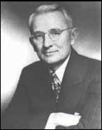

Having power and using power are two different things. For example, imagine a manager who has the power to reward or punish employees. When the manager makes a request, he or she will probably be obeyed even though the manager does not actually reward the employee. The fact that the manager has the ability to give rewards and punishments will be enough for employees to follow the request. What are the sources of one’s power over others? Researchers identified six sources of power, which include legitimate, reward, coercive, expert, information, and referent.French, J. P. R., Jr., & Raven, B. (1960). The bases of social power. In D. Cartwright & A. Zander (Eds.), Group dynamics (pp. 607–623). New York: Harper and Row. You might earn power from one source or all six depending on the situation. Let us take a look at each of these in turn, and continue with Steve Jobs from the opening case as our example.
Legitimate powerPower that comes from one’s organizational role or position. is power that comes from one’s organizational role or position. For example, a boss can assign projects, a policeman can arrest a citizen, and a teacher assigns grades. Others comply with the requests these individuals make because they accept the legitimacy of the position, whether they like or agree with the request or not. Steve Jobs has enjoyed legitimate power as the CEO of Apple. He could set deadlines and employees comply even if they think the deadlines were overly ambitious. Start-up organizations often have founders who use their legitimate power to influence individuals to work long hours week after week in order to help the company survive.
Reward powerThe ability to grant a reward, such as an increase in pay, a perk, or an attractive job assignment. is the ability to grant a reward, such as an increase in pay, a perk, or an attractive job assignment. Reward power tends to accompany legitimate power and is highest when the reward is scarce. Anyone can wield reward power, however, in the form of public praise or giving someone something in exchange for their compliance. When Steve Jobs ran Apple, he had reward power in the form of raises and promotions. Another example of reward power comes from Bill Gross, founder of Idealab, who has the power to launch new companies or not. He created his company with the idea of launching other new companies as soon as they could develop viable ideas. If members could convince him that their ideas were viable, he gave the company a maximum of $250,000 in seed money, and gave the management team and employees a 30% stake in the company and the CEO 10% of the company. That way, everyone had a stake in the company. The CEO's salary was capped at $75,000 to maintain the sense of equity. When one of the companies, Citysearch, went public, all employees benefited from the $270 million valuation.
In contrast, coercive powerThe ability to take something away or punish someone for noncompliance. is the ability to take something away or punish someone for noncompliance. Coercive power often works through fear, and it forces people to do something that ordinarily they would not choose to do. The most extreme example of coercion is government dictators who threaten physical harm for noncompliance. Parents may also use coercion such as grounding their child as punishment for noncompliance. Steve Jobs has been known to use coercion—yelling at employees and threatening to fire them. When John Wiley & Sons Inc. published an unauthorized biography of Jobs, Jobs’s response was to prohibit sales of all books from that publisher in any Apple retail store.Hafner, K. (2005, April 30). Steve Jobs’ review of his biography: Ban it. New York Times. Retrieved January 5, 2008, from http://www.nytimes.com/2005/04/30/technology/30apple.html?ei=5090&en=7cc0ad54117bc197&ex=1272513600&partner= rssuserland&emc=rss. In other examples, John D. Rockefeller was ruthless when running Standard Oil Company. He not only undercut his competitors through pricing, but he used his coercive power to get railroads to refuse to transport his competitor’s products. American presidents have been known to use coercion power. President Lyndon Baines Johnson once told a White House staffer, “Just you remember this. There’s only two kinds at the White house. There’s elephants and there’s ants. And I’m the only elephant.”Hughes, R., Ginnet, R., & Curphy, G. (1995). Power, influence and influence tactics. In J. T. Wren (Ed.), The leaders companion (p. 345). New York: Free Press.
Expert powerPower that comes from knowledge and skill. comes from knowledge and skill. Steve Jobs has expert power from his ability to know what customers want—even before they can articulate it. Others who have expert power in an organization include long-time employees, such as a steelworker who knows the temperature combinations and length of time to get the best yields. Technology companies are often characterized by expert, rather than legitimate power. Many of these firms utilize a flat or matrix structure in which clear lines of legitimate power become blurred as everyone communicates with everyone else regardless of position.
Information powerPower that comes from access to specific information. is similar to expert power but differs in its source. Experts tend to have a vast amount of knowledge or skill, whereas information power is distinguished by access to specific information. For example, knowing price information gives a person information power during negotiations. Within organizations, a person’s social network can either isolate them from information power or serve to create it. As we will see later in this chapter, those who are able to span boundaries and serve to connect different parts of the organizations often have a great deal of information power. In the TV show Mad Men, which is set in the 1960s, it is clear that the switchboard operators have a great deal of information power as they place all calls and are able to listen in on all the phone conversations within the advertising firm.
Figure 13.6
As the 44th elected president of the United States, Barack Obama has legitimate power. As commander-in-chief of the U.S. Armed Forces, he also has coercive power. His ability to appoint individuals to cabinet positions affords him reward power. Individuals differ on the degree to which they feel he has expert and referent power, as he received 52% of the popular vote in the 2008 election. Shortly after the election, he began to be briefed on national security issues, providing him with substantial information power as well.
Referent powerPower that stems from the personal characteristics of the person such as the degree to which we like, respect, and want to be like them. stems from the personal characteristics of the person such as the degree to which we like, respect, and want to be like them. Referent power is often called charismaThe ability to attract others, win their admiration, and hold them spellbound.—the ability to attract others, win their admiration, and hold them spellbound. Steve Jobs’s influence as described in the opening case is an example of this charisma.
Starting at infancy, we all try to get others to do what we want. We learn early what works in getting us to our goals. Instead of crying and throwing a tantrum, we may figure out that smiling and using language causes everyone less stress and brings us the rewards we seek.
By the time you hit the workplace, you have had vast experience with influence techniques. You have probably picked out a few that you use most often. To be effective in a wide number of situations, however, it’s best to expand your repertoire of skills and become competent in several techniques, knowing how and when to use them as well as understanding when they are being used on you. If you watch someone who is good at influencing others, you will most probably observe that person switching tactics depending on the context. The more tactics you have at your disposal, the more likely it is that you will achieve your influence goals.
Al Gore and many others have spent years trying to influence us to think about the changes in the environment and the implications of global warming. They speak, write, network, and lobby to get others to pay attention. But Gore, for example, does not stop there. He also works to persuade us with direct, action-based suggestions such as asking everyone to switch the kind of light bulbs they use, turn off appliances when not in use, drive vehicles with better fuel economy, and even take shorter showers. Ironically, Gore has more influence now as a private citizen regarding these issues than he was able to exert as a congressman, senator, and vice president of the United States.
Do You Have the Characteristics of Powerful Influencers?
People who are considered to be skilled influencers share the following attributes.
How often do you engage in them? 0 = never, 1= sometimes, 2 = always.
If you scored 0–6: You do not engage in much effective influencing behavior. Think of ways to enhance this skill. A great place to start is to recognize the items on the list above and think about ways to enhance them for yourself.
If you scored 7–12: You engage in some influencing behavior. Consider the context of each of these influence attempts to see if you should be using more or less of it depending on your overall goals.
If you scored 13–16: You have a great deal of influence potential. Be careful that you are not manipulating others and that you are using your influence when it is important rather than just to get your own way.
Figure 13.7 Influence Tactics Use and OutcomesKipnis, D., Schmidt, S. M., & Wilkinson, J. (1980). Interorganizational influence tactics: Explorations in getting one’s way. Journal of Applied Psychology, 65, 440–452; Schriescheim, C. A., & Hinkin, T. R. (1990). Influence tactics used by subordinates: A theoretical and empirical analysis and refinement of Kipnis, Schmidt, and Wilkinson subscales. Journal of Applied Psychology, 75, 132–140; Yukl, G., & Falbe, C. M. (1991). The Importance of different power sources in downward and lateral relations. Journal of Applied Psychology, 76, 416–423.

Source: Adapted from information in Falbe, C. M., & Yukl, G. (1992). Consequences for managers of using single influence tactics and combinations of tactics. Academy of Management Journal, 35, 638–652.
Researchers have identified distinct influence tactics and discovered that there are few differences between the way bosses, subordinates, and peers use them, which we will discuss at greater depth later on in this chapter. We will focus on nine influence tactics. Responses to influence attempts include resistance, compliance, or commitment. ResistanceOccurs when the influence target does not wish to comply with the request and either passively or actively repels the influence attempt. occurs when the influence target does not wish to comply with the request and either passively or actively repels the influence attempt. ComplianceOccurs when the target does not necessarily want to obey, but they do. occurs when the target does not necessarily want to obey, but they do. CommitmentOccurs when the target not only agrees to the request but also actively supports it as well. occurs when the target not only agrees to the request but also actively supports it as well. Within organizations, commitment helps to get things done, because others can help to keep initiatives alive long after compliant changes have been made or resistance has been overcome.
You can make more friends in two months by becoming interested in other people than you can in two years by trying to get other people interested in you.
Dale Carnegie
Figure 13.8
How to Make Friends and Influence People was written by Dale Carnegie in 1936 and has sold millions of copies worldwide. While this book first appeared over 70 years ago, the recommendations still make a great deal of sense regarding power and influence in modern-day organizations. For example, he recommends that in order to get others to like you, you should remember six things:
This book relates to power and politics in a number of important ways. Carnegie specifically deals with enhancing referent power. Referent power grows if others like, respect, and admire you. Referent power is more effective than formal power bases and is positively related to employees’ satisfaction with supervision, organizational commitment, and performance. One of the keys to these recommendations is to engage in them in a genuine manner. This can be the difference between being seen as political versus understanding politics.
Impression managementActively shaping the way you are perceived by others. means actively shaping the way you are perceived by others. You can do this through your choice of clothing, the avatars or photos you use to represent yourself online, the descriptions of yourself on a résumé or in an online profile, and so forth. By using impression management strategies, you control information that make others see you in the way you want to be seen. Consider when you are “being yourself” with your friends or with your family—you probably act differently around your best friend than around your mother.Dunn, E., & Forrin, N. (2005). Impression management. Retrieved July 8, 2008, from http://www.psych.ubc.ca/~dunnlab/publications/Dunn_Forrin_2005.pdf.
On the job, the most effective approach to impression management is to do two things at once—build credibility and maintain authenticity. As Harvard Business School Professor Laura Morgan Roberts puts it, “When you present yourself in a manner that is both true to self and valued and believed by others, impression management can yield a host of favorable outcomes for you, your team, and your organization.”Stark, M. (2005, June 20). Creating a positive professional image. Q&A with Laura Morgan Roberts. Retrieved July 8, 2008, from the Harvard Business School Web site: http://hbswk.hbs.edu/item/4860.html.
There may be aspects of your “true self” that you choose not to disclose at work, although you would disclose them to your close friends. That kind of impression management may help to achieve group cohesiveness and meet professional expectations. But if you try to win social approval at work by being too different from your true self—contradicting your personal values—you might feel psychological distress.
It’s important to keep in mind that whether you’re actively managing your professional image or not, your coworkers are forming impressions of you. They watch your behavior and draw conclusions about the kind of person you are, whether you’ll keep your word, whether you’ll stay to finish a task, and how you’ll react in a difficult situation.
Since people are forming these theories about you no matter what, you should take charge of managing their impressions of you. To do this, ask yourself how you want to be seen. What qualities or character traits do you want to convey? Perhaps it’s a can-do attitude, an ability to mediate, an ability to make a decision, or an ability to dig into details to thoroughly understand and solve a problem.
Then, ask yourself what the professional expectations are of you and what aspects of your social identity you want to emphasize or minimize in your interactions with others. If you want to be seen as a leader, you might disclose how you organized an event. If you want to be seen as a caring person in whom people can confide, you might disclose that you’re a volunteer on a crisis helpline. You can use a variety of impression management strategies to accomplish the outcomes you want.
Here are the three main categories of strategies and examples of each:
Research shows that impression management occurs throughout the workplace. It is especially salient when it comes to job interviews and promotional contexts. Research shows that structured interviews suffer from less impression management bias than unstructured interviews, and that longer interviews lead to a lessening of the effects as well.Tsai, W., Chen, C., & Chiu, S. (2005). Exploring boundaries of the effects of applicant impression management tactics in job interviews. Journal of Management, 31, 108–125.
The type of influence tactic used tends to vary based on the target. For example, you would probably use different influence tactics with your boss than you would with a peer or with employees working under you.
Upward influenceThe ability to influence your boss and others in positions higher than yours., as its name implies, is the ability to influence your boss and others in positions higher than yours. Upward influence may include appealing to a higher authority or citing the firm’s goals as an overarching reason for others to follow your cause. Upward influence can also take the form of an alliance with a higher status person (or with the perception that there is such an alliance).Farmer, S. M., & Maslyn, J. M. (1999). Why are styles of upward influence neglected? Making the case for a configurational approach to influences. Journal of Management, 25, 653–682; Farmer, S. M., Maslyn, J. M., Fedor, D. B., & Goodman, J. S. (1997). Putting upward influence strategies in context. Journal of Organizational Behavior, 18, 17–42. As complexity grows, the need for this upward influence grows as well—the ability of one person at the top to know enough to make all the decisions becomes less likely. Moreover, even if someone did know enough, the sheer ability to make all the needed decisions fast enough is no longer possible. This limitation means that individuals at all levels of the organization need to be able to make and influence decisions. By helping higher-ups be more effective, employees can gain more power for themselves and their unit as well. On the flip side, allowing yourself to be influenced by those reporting to you may build your credibility and power as a leader who listens. Then, during a time when you do need to take unilateral, decisive action, others will be more likely to give you the benefit of the doubt and follow. Both Asian American and Caucasian American managers report using different tactics with superiors than those used with their subordinates.Xin, K. R., & Tsui, A. S. (1996). Different folks for different folks? Influence tactics by Asian-American and Caucasian-American managers. Leadership Quarterly, 7, 109–132. Managers reported using coalitions and rationality with managers and assertiveness with subordinates. Other research establishes that subordinates’ use of rationality, assertiveness, and reciprocal exchange was related to more favorable outcomes such as promotions and raises, while self-promotion led to more negative outcomes.Orpen, C. (1996). The effects of ingratiation and self promotion tactics on employee career success. Social Behavior and Personality, 24, 213–214; Wayne, S. J., Liden, R. C., Graf, I. K., & Ferris, G. R. (1997). The role of upward influence tactics in human resource decisions. Personnel Psychology, 50, 979–1006.
Influence takes place even before employees are hired. For example, ingratiation and rationality were used frequently by fire fighters during interviews.McFarland, L. A., Ryan, A. M., & Kriska, S. D. (2002). Field study investigation of applicant use of influence tactics in a selection interview. Journal of Psychology, 136, 383–398. Extraverts tend to engage in a greater use of self-promotion tactics while interviewing, and research shows that extraverts are more likely to use inspirational appeal and ingratiation as influence tactics.Cable, D. M., & Judge, T. A. (2003). Managers’ upward influence tactic strategies: The role of manager personality and supervisor leadership style. Journal of Organizational Behavior, 24, 197–214; Kristof-Brown, A., Barrick, M. R., & Franke, M. (2002). Applicant impression management: Dispositional influences and consequences for recruiter perceptions of fit and similarity. Journal of Management, 53, 925–954. Research shows that ingratiation was positively related to perceived fit with the organization and recruiters’ hiring recommendations.Higgins, C. A., & Judge, T. A. (2004). The effect of applicant influence tactics on recruiter perceptions of fit and hiring recommendations: A field study. Journal of Applied Psychology, 89, 622–632.
Downward influenceThe ability to influence those in positions lower than yours. is the ability to influence employees lower than you. This is best achieved through an inspiring vision. By articulating a clear vision, you help people see the end goal and move toward it. You often don't need to specify exactly what needs to be done to get there—people will be able to figure it out on their own. An inspiring vision builds buy-in and gets people moving in the same direction. Research conducted within large savings banks shows that managers can learn to be more effective at influence attempts. The experimental group of managers received a feedback report and went through a workshop to help them become more effective in their influence attempts. The control group of managers received no feedback on their prior influence attempts. When subordinates were asked 3 months later to evaluate potential changes in their managers’ behavior, the experimental group had much higher ratings of the appropriate use of influence.Seifer, C. F., Yukl, G., & McDonald, R. A. (2003). Effects of multisource feedback and a feedback facilitator on the influence behavior of managers toward subordinates. Journal of Applied Psychology, 88, 561–569. Research also shows that the better the quality of the relationship between the subordinate and their supervisor, the more positively resistance to influence attempts are seen.Tepper, B. J., Uhl-Bien, M., Kohut, G. F., Rogelberg, S. G., Lockhart, D. E., & Ensley, M. D. (2006). Subordinates’ resistance and managers’ evaluations of subordinates’ performance. Journal of Management, 32, 185–208. In other words, bosses who like their employees are less likely to interpret resistance as a problem.
Peer influence occurs all the time. But, to be effective within organizations, peers need to be willing to influence each other without being destructively competitive.Cohen, A., & Bradford, D. (2002). Power and influence in the 21st century. In S. Chowdhurt (Ed.), Organizations of the 21st century. London: Financial Times-Prentice Hall. There are times to support each other and times to challenge—the end goal is to create better decisions and results for the organization and to hold each other accountable. Executives spend a great deal of their time working to influence other executives to support their initiatives. Research shows that across all functional groups of executives, finance or human resources as an example, rational persuasion is the most frequently used influence tactic.Enns, H. G., & McFarlin, D. B. (2003). When executives influence peers: Does function matter? Human Resource Management, 42, 125–142.
Now that you’ve learned a great deal about power and influence within organizations, consider asking yourself how comfortable you are with the three statements below:
Discomfort with power reduces your power. Experts know that leaders need to feel comfortable with power. Those who feel uncomfortable with power send those signals out unconsciously. If you feel uncomfortable with power, consider putting the statement in a shared positive light by saying, “I want to be powerful so that we can accomplish this goal.”
Individuals have six potential sources of power, including legitimate, reward, coercive, expert, information, and referent power. Influence tactics are the way that individuals attempt to influence one another in organizations. Rational persuasion is the most frequently used influence tactic, although it is frequently met with resistance. Inspirational appeals result in commitment 90% of the time, but the tactic is utilized only 2% of the time. The other tactics include legitimizing, personal appeals, exchanges, ingratiation, pressure, forming coalitions, and consultation. Impression management behaviors include conforming, making excuses, apologizing, promoting your skills, doing favors, and making associations with desirable others known. Influence attempts may be upward, downward, or lateral in nature.


{kind=link}
{kind=link}